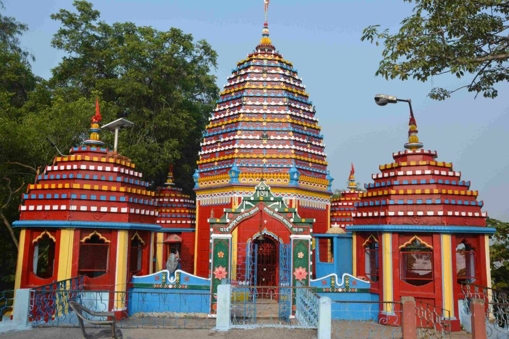

The Sacred
Rajrappa Temple
One of the 51 Shakti Peethas, dedicated to Goddess Chhinnamasta - the self-decapitated goddess. Located at the confluence of Bhairavi and Damodar rivers in Jharkhand.
Shakti Peeth
River Confluence
Chhinnamasta

51 Shakti Peeth
One of the Sacred Sites
Chhinnamasta
The Headless Goddess